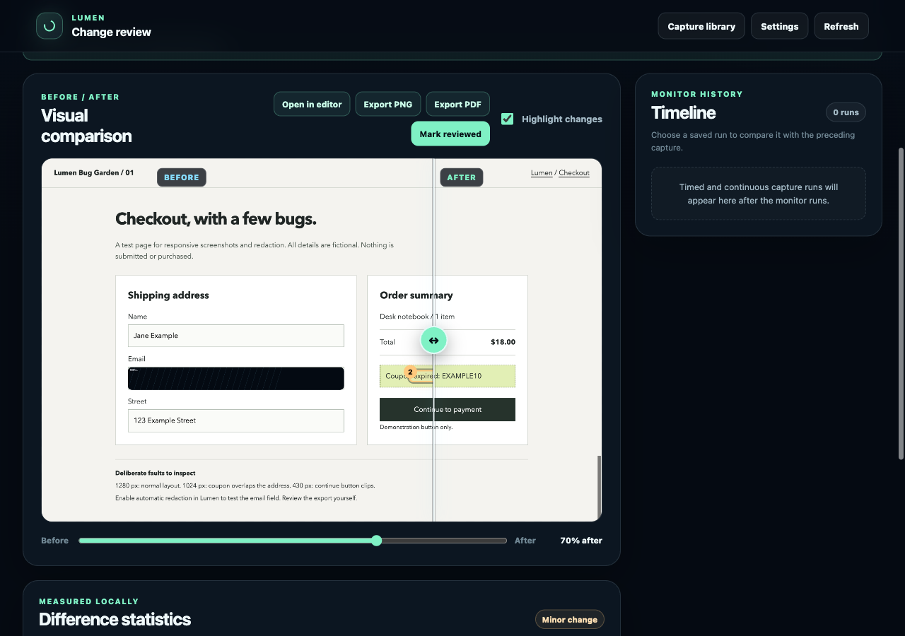

{kind=link}
{kind=link}
01 / CAPTUREPage or selection
Capture
Choose Full page, Visible, Area, or Set. Page preparation can hide sticky overlays and trigger lazy content first, then restore the page afterward.
Selection illustration
Chrome extension for design review and web QA
Capture a full page, the visible viewport, a selected area, or desktop, tablet, and mobile views together. Open the screenshots in Lumen to review them before saving or sharing.
Manual Chrome install · No account required · Local by default
 View full size
View full size
Bug Garden / Checkout 01
This checkout has intentional layout problems at tablet and mobile widths. Switch between 1280, 1024, and 430 px to preview the layouts shown in the sample screenshots.
Live preview, scaled to fit. The defects belong to the page; Lumen records the views you choose.
Open Bug Garden ↗How it works
Choose Full page, Visible, Area, or Set. Page preparation can hide sticky overlays and trigger lazy content first, then restore the page afterward.
Selection illustration
Open the saved views together. Cover private details or add arrows, text, and rectangles in Annotation Studio.

Copy an image, save PNG or PDF, or download selected originals as a ZIP. Annotated images are saved separately.
In Settings, turn on Include capture details file to save colors, fonts, headings, and navigation labels in an optional JSON file. This option starts off.
Sample page contextCurrent redaction covers detectable visible text and filled inputs during export. Review every capture before external sharing, including text inside images and embedded frames.
Library and Compare
Lumen keeps lightweight local previews; your full resolution originals remain in Chrome Downloads. Open a saved capture from the library, or select two to open Compare.
Save a selected area to capture it again on a schedule. Monitoring requires explicit site permission and runs while Chrome is available.

Privacy
Lumen does not upload captures automatically. Captures and local previews stay on your device. Automatic redaction is off by default. Review images before sharing them elsewhere.
Privacy detailsChrome's protected pages cannot be captured. Complex embeds, moving content, and unusual scrolling layouts can require another capture.
Set up the beta
Download the tested Chrome beta below. Install it manually on your computer; the Chrome Web Store submission is still in progress.
Download beta 0.5.0Beta 1 · manual Chrome install
Source a903623. The download is the tested Beta 1
package. Google Drive is unavailable in this beta.
Extract the ZIP and move the folder somewhere permanent before loading it in Chrome.
Open chrome://extensions, enable Developer mode,
and choose Load unpacked. Select the extracted folder that
contains manifest.json.
Open a regular webpage, click Lumen, and review the result.
Replace the files in your existing extension folder with the new
beta files, then click
Reload on Lumen's card at chrome://extensions. Reload
your test webpage too. Keep using the same extracted folder so
Chrome treats it as the same unpacked installation.